You: “a rectangular block above it with an option to expand … it expands big … and canvas settings shrinks into a small rectangle. The roles are reversed.”
These pictures are your real app on a phone, with the new block built in. Tap the ⤢ on a bar and the two swap. It always reopens on whichever one you had open last. The two moving versions are sent as separate clips.
This is your “roles reversed” exactly. The big block is always in the middle, and the one you can switch to is always the bar at the top. So swapping is always the same thumb spot. The two cross over as they swap, and the one arriving flies above the one leaving.
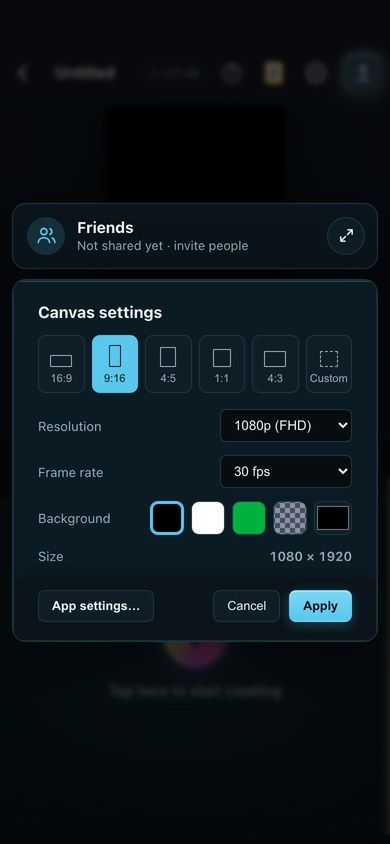
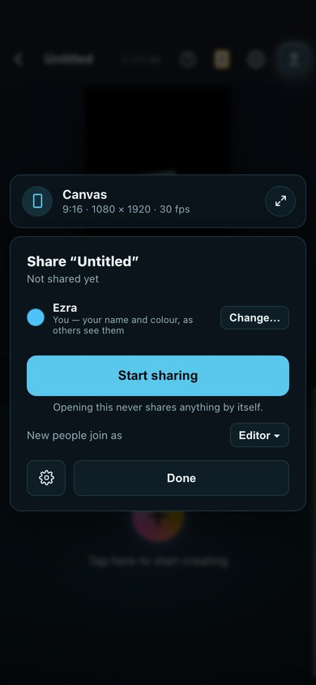
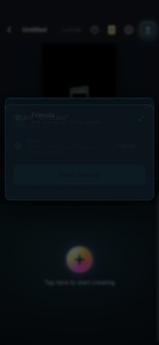
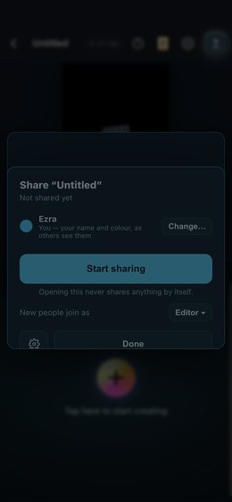
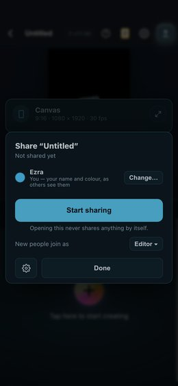
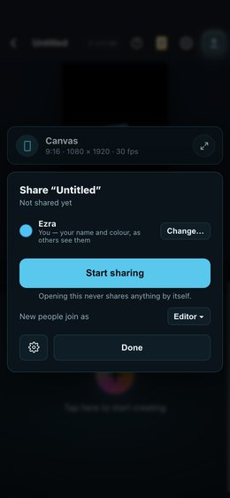
Nothing changes places. Friends grows downward over Canvas, and Canvas shrinks to a bar underneath. It's calmer to watch, but the bar you tap jumps from the top to the bottom.
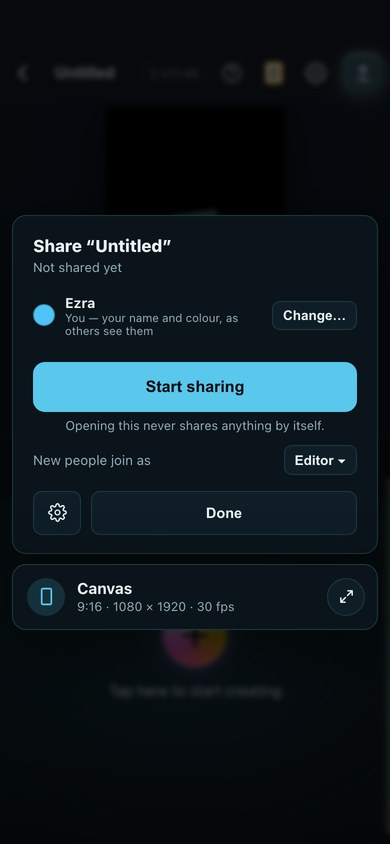
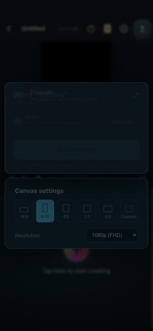
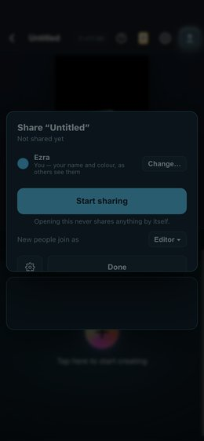
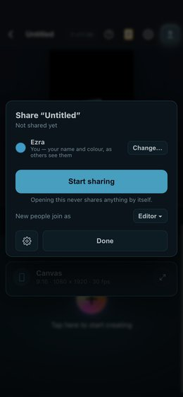
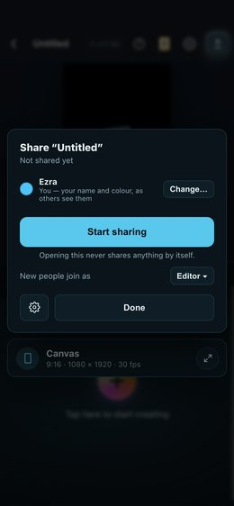
The Friends bar shows a green Live dot and everyone's faces, so you can see who's there without opening it. Opened up, it's the same sharing card you already have on PC.
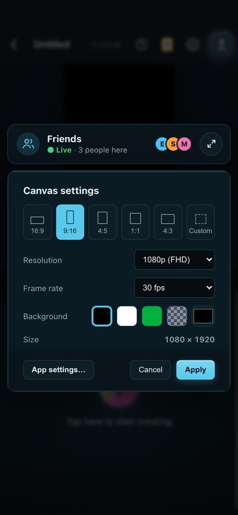
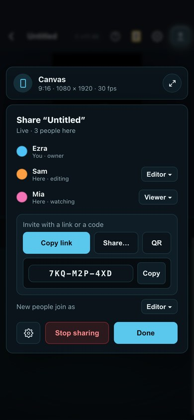
Opening Canvas settings never starts sharing by itself. Sharing only starts when you press Start sharing (today, the Share button starts it straight away).